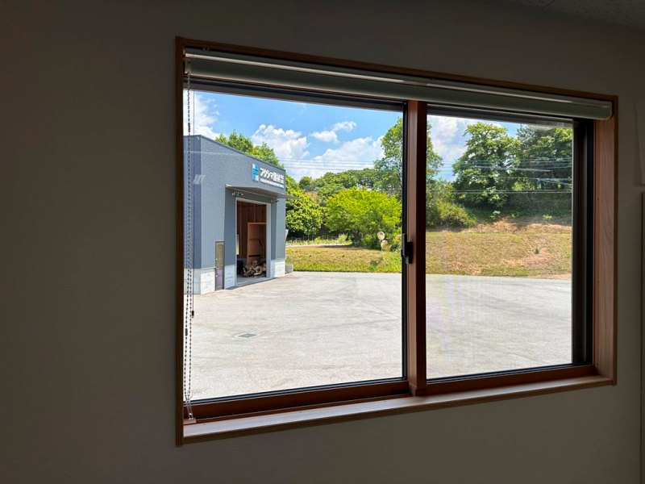
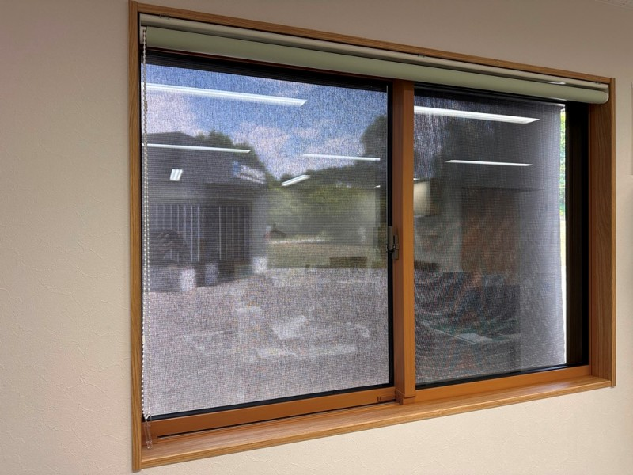

夏の西日と暑さは、
窓の「外」で止める。

エアコンを強くしても、夕方のリビングがなぜか暑い。西向きの部屋だけ、サウナのようにこもる。その原因の多くは、実は窓にあります。この記事では、窓のリフォームを専門にしてきた私たちが、夏の暑さがどこから来るのか、そして窓の外で日差しを止めるという対策を、仕組みから費用まで、できるだけ正直にお話しします。
この記事の目次
- 夏に家へ入る熱の多くは窓から。だから窓の外で日差しを止めるのが近道です。
- 西向き・南向きなど、午後から夕方に直射が当たる窓ほど効果を感じやすいです。
- 外付けシェードの費用は1箇所あたりおよそ3〜5万円。施工は約1時間、後付けできます。
費用の目安 3〜5万円〜 （1箇所・税込・現地調査後の概算。窓の数やサイズで変わります）
概算のお返事だけに使い、しつこい追客はしません。ブロックすれば、こちらから連絡する手段はなくなります。
夕方のリビングが、
サウナのように暑い
夏の夕方、西に傾いた日が窓から差し込む時間帯。遮光カーテンを引いても、部屋にこもった熱はなかなか引きません。エアコンの設定温度を下げても、効いている感じがしない。背中にじわりと汗がにじむ、あの夕方の感じです。
我慢できないほどではない。でも、毎年この時季になると、夕方の部屋がしんどい。
とくに西向きの部屋や2階は、午後から夕方にかけて室温が上がりやすい場所です。子ども部屋が暑くて勉強に集中できない、寝室が寝苦しい、リビングでくつろげない。フローリングや家具が日に焼けて色あせていく、というお悩みもよく伺います。そしてエアコンをフル稼働させるぶん、夏のあいだは電気代もぐっと増えます。
もし思い当たるなら、原因はあなたの家の断熱が特別に悪いからではないかもしれません。多くの家に共通する、ある一点が関係しています。
部屋が暑くなる原因は、
ほとんど窓にあります
夏に家の中へ入ってくる熱の多くは、壁や屋根ではなく窓から入ってきます。日ざしが強い時間帯は、家に入る熱のおよそ7割が窓（開口部）からといわれます。壁や屋根や床は、断熱材や空気の層である程度仕切られています。それに比べて窓は、ガラス1枚で外と仕切っているだけ。だから、夏の暑さ対策は、まず窓から考えるのが近道なのです。

大事なのは「どこで」遮るか
ここでひとつ、知っておいていただきたいことがあります。それは、日差しを遮る場所です。遮光カーテンも、室内のブラインドも、内窓も、すべて窓ガラスの内側で熱を受け止める対策です。ですが、熱はガラスを通過した時点で、もう部屋の中に入ってしまっています。
たとえるなら、浴槽にお湯を入れたあとでフタをするようなもの。いったん入った熱は、室内でこもり、なかなか外へ逃げてくれません。だからこそ、ガラスに届く手前、つまり窓の外で日差しを止めることが効くのです。
窓の外に下ろすだけ。
外付け日よけ「スタイルシェード」
スタイルシェードは、スクリーン状の生地を窓の外側に下ろして使う、外付けの日よけです。強い日差しを、窓ガラスに届く手前でカットします。室内のカーテンと違い、入ってくる熱そのものを減らせるのが、外付けならではの強みです。

暗くしすぎず、視線も和らぐ
日よけというと部屋が暗くなる印象がありますが、生地の色を選べば、真っ暗にせずやわらかい明るさを保てます。外からの視線も適度に遮るので、日差しをよけながらプライバシーも守れます。

後付けでき、使わない時は巻き上げ
今ある窓に後付けできます。必要なときだけ下ろし、使わない時期や台風のときは巻き上げて収納できます。施工は1箇所およそ1時間。多くは室内からの取り付けで、足場も不要です。

どのくらい効くのか
窓の外で日差しを止めると、入ってくる熱そのものが減ります。メーカーの試験では、窓から入る日射熱の多くをカットできるという結果が出ています。
この数値は外付け日よけスタイルシェードのメーカー公表値で、一定の試験条件下での最大値です。窓単体での試験結果であり、家全体の体感温度がそのぶん下がるという意味ではありません。なお、この数値は遮熱の効果を示すもので、先進的窓リノベなどの補助金とは別の話です（外付けシェード単体は補助金の対象外です。詳しくは費用の章で）。
- 西・南の窓ほどよく効きます。朝日の差す東の窓も効果を感じやすいです。
- 北側の窓は、もともと直射が弱いぶん、差は控えめになります。
- 効き方は、窓の方位・今ついている窓・その日の天候によって変わります。
あなたの窓は
効きやすい？（30秒）
当てはまるほど、外付けシェードの効果を感じやすい窓です。気になったら、そのままLINEで一言ご相談ください。
- 窓が西向き・南向き・東向きで、午後から夕方に直射が当たる
- 午後になると、特定の部屋（リビング・2階・子ども部屋）だけ暑い
- 戸建てに住んでいる（マンションは外壁への取り付けが難しいことが多いです）
施工事例
言葉より、現場で起きたことをお伝えするのが早いと思います。フクシマ建材で実際に施工した事例です。誇張はありません。


西日が直撃するリビングに、外付けシェードを設置
- 状況
- 夕方になると西日が直接差し込み、エアコンを強くしても効きが悪い。遮光カーテンでは暑さがこもっていた。
- 対応
- 掃き出し窓に外付けスタイルシェードを設置。室内からの取り付けで、当日のうちに完了。
- 結果
- 日差しが窓の手前で和らぎ、エアコンの効きが戻った。夕方の部屋にこもる暑さが減った。
暑さでこもっていた2階の部屋を、夏前に対策
- 状況
- 1階より2階のほうが明らかに暑く、午後は室温が上がって過ごしづらかった。
- 対応
- 暑さの気になる窓に外付けシェードを設置。足場を使わず短時間で施工。
- 結果
- 設置後は室温が下がり、午後でも過ごしやすくなった。
お客様の声
施工させていただいたお客様から、実際にいただいた声です。
つけてからエアコンの効きが全然違います。夕方の西日が和らいで、部屋にこもる暑さが減りました。もっと早くやればよかったです。
戸建ての西向きリビングに設置されたお客様
暑くてどうにもならなかった2階が、設置後は室温が下がって過ごしやすくなりました。
2階の暑さ対策で設置されたお客様
見た目もすっきりしていて、使わない時は巻き上げておけるのが気に入っています。窓まわりが暗くなりすぎないのもよかったです。
掃き出し窓に設置されたお客様
フクシマ建材が選ばれる理由
窓の専門店として、九州一円で数多くの施工をしてきました。スタイルシェードは多くの場合、室内から短時間で取り付けでき、足場も要りません。専門用語をかみくだいて、分かりやすく丁寧にご説明するのが、私たちの大切にしていることです。
費用と補助金のこと
スタイルシェードは、窓リフォームの中では始めやすい価格です。窓の大きさによって変わるので、目安を正直にお出しします。手が届きやすく、その夏からすぐに効果を感じられる対策です。
※ 商品・工賃込みの目安です。窓のサイズや取り付け条件で変わります。正確な金額はお見積もりでお出しします。
うちの窓だと、いくらくらい？
L自分の家の場合を聞いてみる 窓の向きや大きさを一言いただければ、おおよその費用をお返事します。写真があれば、より正確にお出しできます。合わなければ、そこで終わりにして構いません。いつでもブロックできます。
ご相談から施工までの流れ
LINEで友だち追加して、一言送る
暑さが気になる窓のこと（向き・大きさなど）を一言送ってください。写真があれば、より正確に。入力フォームは不要です。
翌営業日までに概算をお返事
いただいた内容をもとに、おおよその費用と効果の目安をお伝えします。
現地調査（ご希望があれば・無料）
実際の窓を見て、正確なお見積もりをお出しします。
施工（1箇所およそ1時間）
多くは室内からの取り付けで、足場も不要。その日のうちに完了し、すぐに効果を体感いただけます。
よくある質問
LINEに登録したら、しつこく営業されませんか
いたしません。いただいた内容は概算のお返事のためだけに使い、しつこい追客には回しません。合わないと感じたら、いつでもブロックしていただいて構いません。ブロックされた後は、こちらから連絡する手段はなくなります。
遮熱フィルムと外付けシェード、どちらを先にやるべきですか
迷ったらシェードを優先してください。窓の外で日差しを止めるほうが、入ってきた熱を内側で受け止めるより効果を感じやすいためです。状況をふまえてご相談に乗ります。
マンションでも取り付けできますか
正直にお伝えすると、ほとんどのマンションでは難しいのが現実です。外壁への取り付けが管理規約で禁止されているケースが多いためです。戸建ては問題なく取り付けできます。
台風や強風のときはどうなりますか
強い風が来る前には、巻き上げて収納してください。使わない時期はしまっておけるので、生地を長持ちさせることにもつながります。
冬はどうなりますか
スタイルシェードは日差しを遮る日よけで、冬の断熱性能を上げるものではありません。冬の寒さ・結露対策をご希望なら、内窓のほうが向いています。あわせてご提案できます。
工事は何時間かかりますか
1箇所あたりおよそ1時間です。多くは室内からの取り付けで、足場も不要。大がかりな工事にはなりません。
フクシマ建材について
窓・内窓・玄関ドアのリフォームを専門に、九州一円で施工しています。理念は、分かりやすく、丁寧に。お客様のお困りごとを、専門外の方にも伝わる言葉で解決することを大切にしています。
フクシマ建材株式会社
もっと早くやればよかった。
夏が来るたび、そう思う前に。
西日で困っているのですが、どうしたらいいですか。
その一言から、気軽に始めてみてください。